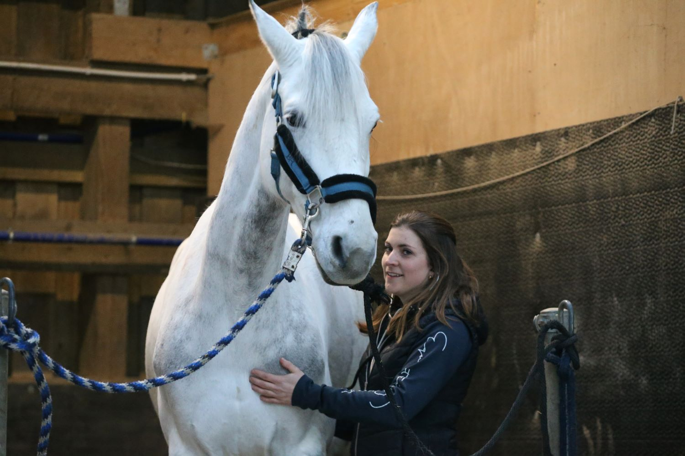
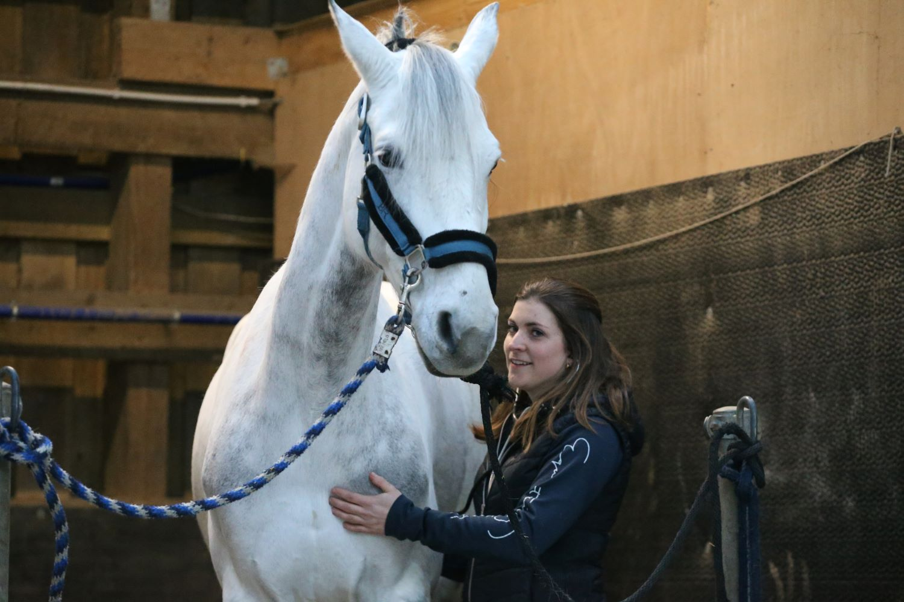

Suivi sur mesure et quotidien de vos chevaux en fonction de vos besoins.

Entretien dentaire annuel et retrait de dents de loup avec du matériel de qualité.
Equipée d'un appareil radio et d’un échographe portables.
 

Parce que prévenir vaut mieux que guérir, n’hésitez pas à
prévoir un rendez-vous bi-annuel pour le vaccin et le check-up
de votre cheval.

Je me rends disponible au maximum pour vous accompagner lors de vos urgences aussi bien la nuit que les weekends. Je travaille également en collaboration avec d’autres vétérinaires de la région pour assurer un service de qualité.
Appel d'urgencePlongée dans le monde des chevaux depuis mon plus jeune âge, j'ai toujours été passionnée par le bien être de nos compagnons équins. Diplômée en 2018 à l’université de Liège, j’ai ensuite réalisé un internat spécialisé en médecine interne à l’université de Gand. Je suis alors revenue sur Liège où j’ai démarré une activité équine ambulatoire. Afin d'offrir le meilleur soin possible à mes patients, je suis régulièrement des formations sur des sujets cruciaux tels que la radiographie et l'échographie du système locomoteur.